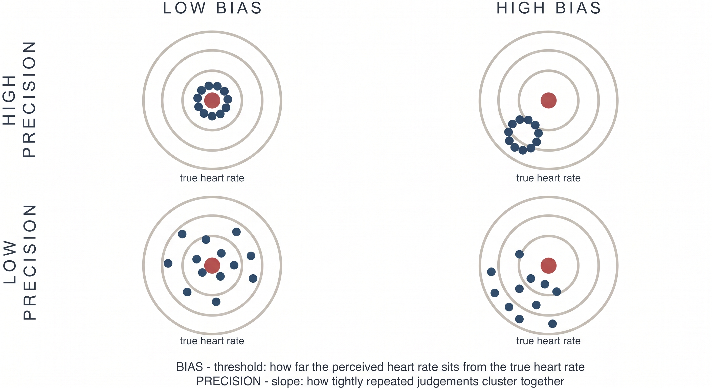

Theory#
Author: Micah G. Allen
Before you analyse an HRD dataset, you need to be clear about what the task can measure. Cardiac interoception is often described as the ability to perceive one’s heartbeat accurately. That description sounds straightforward until we ask what an experimental score actually identifies.
We developed the Heart Rate Discrimination task to estimate three distinguishable features of cardiac judgement: perceptual bias, perceptual precision, and the relationship between confidence and performance. Together they describe a person’s beliefs about their heart rate under particular task conditions. This is a narrower claim than measuring a general interoceptive ability.
This page explains that position and the evidence behind it. The practical tutorials build on these distinctions.
Cardiac interoception as a measurement problem#
Interoception encompasses the processes by which the nervous system senses, interprets, and regulates the internal state of the body. Cardiac interoception is one part of that larger system. It has been studied extensively because the heartbeat is continuous, discrete, and easy to record, and because bodily signals are thought to contribute to emotion, cognition, and the sense of self [Legrand et al., 2022, Garfinkel et al., 2022].
The experimental difficulty is that a heartbeat is an endogenous stimulus. In most laboratory studies we can record it, but we cannot set its intensity and timing as freely as we would set the contrast of a visual stimulus. A participant’s response may therefore reflect several sources of information at once, including afferent cardiac signals, prior knowledge of heart rate, attention, decision strategy, and the current physiological context. A task score does not separate these sources simply because it is compared with an objective recording.
This problem is clearest in the two task families that have dominated the cardiac interoception literature. Brener and Ring provide a detailed review [Brener and Ring, 2016].
What heartbeat counting can establish#
In the heartbeat counting task [Dale and Anderson, 1978, Schandry, 1981], participants report how many heartbeats they experienced during a fixed interval. The reported count is compared with the recorded count to produce an accuracy score. The task is brief and simple to administer, which helps explain its very large literature.
A plausible estimate of resting heart rate can produce a good counting score without reliable detection of individual heartbeats. Several results show how strongly prior knowledge contributes:
In patients with cardiac pacemakers, actual rates of 61, 76, and 109 BPM produced reported rates of 52, 54, and 59 BPM. The reports changed very little as the heart rate changed [Windmann et al., 1999].
Counting scores tend to improve when participants lie down. In one study, reported rates were similar when supine and standing, at 50 and 48 BPM, while recorded rates differed substantially, at 70 and 86 BPM. The score improved because the recorded rate moved closer to the participant’s estimate [Brener and Ring, 2016].
Heart-rate feedback can improve later counting scores even when the feedback is unrelated to the participant’s own heart. This changes knowledge of heart rate without demonstrating increased cardiac sensitivity [Brener and Ring, 2016].
The scoring rule adds further ambiguity. Systematic undercounting has a large influence on the score, and sensitivity cannot be separated from response bias [RING and BRENER, 1996, Zamariola et al., 2018, Desmedt et al., 2020]. A high counting score is therefore insufficient evidence that the participant detected their heartbeats. It may reflect sensation, knowledge, or a favourable combination of the two. The large literature built with the task remains informative within that constraint [Ferentzi et al., 2022].
What fixed-delay synchrony tasks can establish#
The other common approach is a two-alternative heartbeat synchrony task [Whitehead et al., 1977]. Tones or flashes are presented at two delays from the ECG R-wave, and participants judge which sequence is simultaneous with their heartbeat. Successful performance requires access to cardiac timing, which is a clear advantage over counting.
The usual implementation assumes that heartbeat sensations occur at similar latencies across people. Multi-interval studies show substantial individual variation, with preferred intervals distributed across approximately R+100 to R+400 ms [Brener and Ring, 2016]. Consider a participant whose heartbeat sensation occurs at R+256 ms. Tones at R+128 and R+384 ms are equally distant from that sensation, so the participant may treat both as equally synchronous. Their poor discrimination would be compatible with a clearly perceived heartbeat at a latency the task did not sample.
Fixed-delay tasks consequently risk false negatives. Only about one quarter of participants meet the conventional detector criterion in common versions of the task, and performance improves when stimulus delays better accommodate individual cardiac timing [Brener and Ring, 2016]. A failure to discriminate two chosen delays does not uniquely identify an absence of heartbeat sensation.
Why the traditional tasks disagree#
Heartbeat counting and fixed-delay synchrony tasks are often placed under the same heading of interoceptive accuracy. If they measured the same ability, their scores should show a reasonably stable association. In practice, correlations are generally weak or absent [Brener and Ring, 2016].
This disagreement is informative. Counting is vulnerable to good performance based on prior knowledge, while a fixed-delay task can miss participants whose sensation occurs at an unexpected latency. Combining both under a single label does not resolve either measurement problem.
A dimensional framework#
Garfinkel and colleagues proposed a useful distinction among three aspects of interoception [Garfinkel et al., 2015]:
Dimension |
Intended construct |
Typical assessment |
|---|---|---|
Interoceptive accuracy |
Detection of internal events |
Objective task performance |
Interoceptive sensibility |
Attention to and beliefs about internal states |
Self-report questionnaires |
Interoceptive awareness |
Insight into one’s own task performance |
Confidence-based metacognitive measures |
The framework prevents us from treating task performance, questionnaire scores, and metacognition as versions of the same variable. That was an important advance, and later work has extended the framework across bodily systems and additional dimensions [Garfinkel et al., 2022].
The label attached to a task does not establish its construct validity. Calling heartbeat counting and fixed-delay synchrony measures “interoceptive accuracy” still leaves their opposite biases and weak correspondence unexplained. Murphy makes the broader point that progress now depends on better measurement and a more careful account of individual differences, including state dependence and the context in which a person uses bodily information [Murphy, 2023].
We retain the dimensional view. For the HRD, we define each quantity from the behaviour that identifies it and avoid treating accuracy as a general-purpose label.
A stronger measure of heartbeat timing#
The method of constant stimuli offers an instructive comparison. It presents signals at several delays spanning the cardiac cycle, commonly from R+0 to R+500 ms, and asks whether each signal was simultaneous with a heartbeat sensation [Brener et al., 1993].
Sampling several delays allows the participant’s data to reveal two quantities. The preferred delay locates the heartbeat sensation within the cardiac cycle. The spread of preferred delays measures the temporal precision of detection. This design addresses the main ambiguity of fixed-delay tasks and shows good agreement with related multi-interval procedures [Brener and Ring, 2016].
Its practical demands are substantial. A standard session takes about 35 minutes, and implementations can take considerably longer once familiarisation is included [Legrand et al., 2022, Brener and Ring, 2016]. The task also requires precise synchronization of cardiac and external events. Participants must attend to both streams and make a temporal judgement, which adds demands beyond sensing the heartbeat itself.
For studies concerned specifically with the timing and reliability of afferent heartbeat sensations, this remains an important design. The HRD addresses a different question.
Why the HRD measures cardiac beliefs#
The HRD treats a person’s estimate of their heart rate as the target of measurement. This choice is motivated by both the limitations of existing tasks and a computational account of interoception.
Interoception involves inference#
Predictive processing models describe interoception as inference about bodily state. The nervous system combines visceral evidence with prior expectations, with their relative influence depending on estimated precision [Allen and Friston, 2018, Allen and Tsakiris, 2018, Petzschner et al., 2021]. Affect, context, and anticipated physiological demands can also shape this process. Related work has developed these ideas as candidate mechanisms for psychiatric and psychosomatic symptoms [Owens et al., 2018].
On this account, a report about the heart reflects an estimate formed from several sources of information. Prior beliefs are part of the perceptual process we want to understand. They cannot be treated only as contamination between an afferent signal and a verbal response.
The measurement claim is behavioural. The HRD estimates the bias and precision expressed in repeated perceptual judgements. Identifying a neural prior or afferent precision requires additional measurements and experimental manipulations. HRD parameters can be related to physiological, neural, or clinical variables when the study design supports that inference.
From repeated judgements to a psychometric function#
Experimental work on heart-rate discrimination dates to the 1960s and includes studies of exercise, training, and heart-rate control [Whitehead et al., 1977, Mandler and Kahn, 1960, Jones and Hollandsworth, 1981, Grigg and Ashton, 1982]. The HRD revisits this question with an adaptive psychophysical procedure [Legrand et al., 2022].
On a cardiac trial, the participant attends to their heart and then hears a tone sequence. The tones are faster or slower than the heart rate measured during the listening interval. The participant chooses “faster” or “slower,” and the task adjusts the difference in BPM across trials. An exteroceptive trial uses the same judgement between two tone sequences.
The probability of a “faster” response is modelled as a function of the exact stimulus difference. This separates two properties that an accuracy score mixes together:
The threshold is the point of subjective equality. It measures signed bias in the participant’s estimate of heart rate. A negative threshold indicates that the participant judged a tone below the recorded heart rate as equal to it.
The psychometric slope describes how sharply choices change around the threshold. A steeper transition indicates more precise discrimination. Check the parameterization when reporting a model because the online Psi value and the offline model encode slope in opposite directions.

The dartboard is an analogy for these two properties. The centre of a cluster represents bias and its spread represents precision. Although the diagram uses repeated point estimates, the HRD identifies the corresponding centre and spread from binary choices across stimulus intensities. A participant can show little bias and poor precision, or substantial bias and high precision. The psychometric function distinguishes these cases.
The scientific model also includes a lapse rate. Lapses describe responses that are weakly related to stimulus intensity and prevent an occasional mistake at an easy intensity from distorting the estimated threshold or slope. Lapse rate is a feature of the response process, not a measure of interoceptive ability.
Confidence adds a separate measurement problem#
The HRD records confidence after each choice. These ratings support two distinct questions. Overall confidence describes metacognitive bias. In the ordered beta model, the difference in confidence between correct and incorrect trials describes metacognitive calibration.
We use calibration specifically for the Accuracy coefficient and its interactions
in this model. We reserve metacognitive sensitivity and efficiency for quantities
derived from an SDT model, such as meta-\(d'\) and the M-ratio
[Fleming and Lau, 2014].
We also no longer recommend the M-ratio for this task. Psi samples stimuli around each participant’s subjective equality point, while accuracy is scored relative to the recorded heart rate. As bias increases, the type-1 response table needed for d-prime and meta-d-prime becomes increasingly unbalanced. The resulting ratio is least stable for participants with the largest cardiac biases. Our current analysis models the 0 to 100 ratings directly with ordered beta regression, retaining responses at both bounds [Kubinec, 2023]. The metacognition tutorial develops this analysis.
The exteroceptive condition provides a within-person comparison#
In the exteroceptive condition, participants compare a tone sequence with a previously heard tone rather than with their heart. The response mapping, adaptive procedure, and confidence scale are otherwise closely matched. This gives us a within-person comparison for general temporal discrimination, response selection, and confidence use.
Treat this condition as a matched within-person comparator rather than a pure subtraction. Some nonspecific processes remain, but the comparison tells us whether a pattern is more pronounced for cardiac judgements than for a similar auditory judgement. In the original validation study of 223 participants, cardiac judgements were more negatively biased and less precise. They also had a lower M-ratio under the metacognitive analysis used in that paper [Legrand et al., 2022].
What you may conclude from the HRD#
The main quantities answer specific behavioural questions:
Quantity |
Model term |
Question answered |
|---|---|---|
Cardiac bias |
Threshold |
At which difference in BPM are “faster” and “slower” responses equally likely? |
Cardiac precision |
Slope |
How sharply do choices change around that threshold? |
Stimulus-independent responding |
Lapse rate |
How often are choices poorly related to stimulus intensity? |
Confidence bias |
Confidence intercept |
How high are confidence ratings overall? |
Metacognitive calibration |
Accuracy effect on confidence |
How much higher is confidence on correct than incorrect trials? |
These quantities are more informative than a single accuracy score because the model keeps bias, precision, lapses, and confidence apart. Their interpretation still depends on the study. Attention, physiology, memory, learning, and context can all affect an HRD session. A single session should not be assumed to reveal a stable trait, and an association with a clinical variable does not by itself identify a neural mechanism.
For group inference, fit the trial-level responses with the hierarchical model described by Courtin and colleagues [Courtin et al., 2026]. The online Psi estimates are useful for monitoring data collection, but they are not outcome variables for a group analysis.
Where to go next#
The tutorials follow the analysis from one session to a group model:
Inspecting and plotting data explains the trial files and the checks we use during data collection.
The psychophysical model introduces threshold, slope, lapse rate, and a single-participant fit.
Hierarchical modelling estimates participant and population effects in one model.
Metacognition models confidence bias and metacognitive calibration.
For task administration and staircase settings, see the user guide.